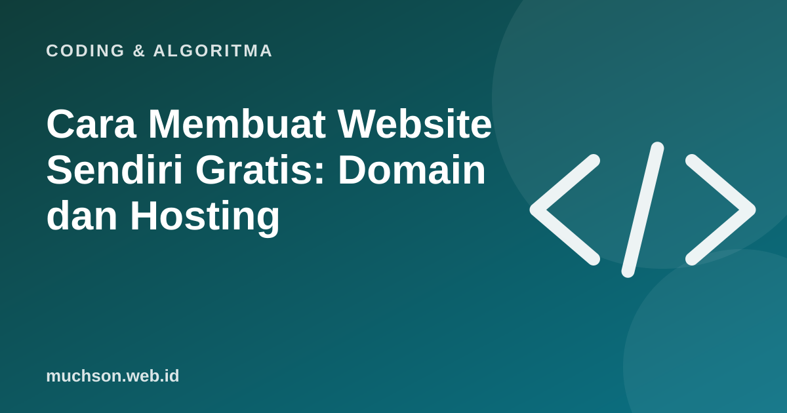

Beranda › Artikel › Coding & Algoritma
Coding & AlgoritmaCara Membuat Website Sendiri Gratis: Domain dan Hosting
Website pribadi, portofolio, atau halaman usaha kecil bisa dibuat dengan biaya hampir nol. Banyak orang mengira harus membayar hosting mahal setiap bulan, padahal untuk website statis tersedia hosting gratis yang andal. Artikel ini menjelaskan bedanya domain dan hosting, lalu memandu langkah demi langkah.

Domain dan hosting: alamat dan rumah
Domain adalah alamat rumah, hosting adalah rumahnya. Saat seseorang mengetik alamat domain, sistem DNS menunjukkan ke server mana harus pergi, lalu server itu mengirim berkas website ke browser.
Website statis atau dinamis?
| Jenis | Ciri | Contoh | Hosting |
|---|---|---|---|
| Statis | Berkas HTML, CSS, JS yang sama untuk semua pengunjung | Portofolio, profil usaha, undangan, dokumentasi | Banyak pilihan gratis |
| Dinamis | Butuh server dan database yang memproses data | Toko online dengan akun, forum, sistem sekolah | Biasanya berbayar |
Situs yang Anda baca ini adalah contoh situs statis: artikel dibuat menjadi berkas HTML saat build, lalu disajikan cepat oleh layanan hosting statis.
Pilihan hosting statis gratis
| Layanan | Cocok untuk | Catatan |
|---|---|---|
| GitHub Pages | Portofolio developer, dokumentasi | Berkas di repositori GitHub, domain gratis di github.io |
| Cloudflare Pages / Workers | Situs statis dan aplikasi web | Jaringan global, bisa dihubungkan langsung dengan Git |
| Netlify | Situs statis dengan formulir sederhana | Antarmuka mudah, deploy dari Git |
| Vercel | Proyek React dan Next.js | Populer untuk aplikasi frontend modern |
Batas paket gratis setiap layanan bisa berubah. Untuk portofolio dan profil usaha, paket gratis biasanya lebih dari cukup.
Langkah membuat website portofolio
- Siapkan berkas:
index.html,style.css, dan gambar. Mulai sederhana: nama, foto, keahlian, proyek, kontak. - Buat akun GitHub dan repositori baru, unggah berkas Anda.
- Aktifkan GitHub Pages di pengaturan repositori, pilih cabang utama sebagai sumber.
- Tunggu beberapa menit, lalu buka alamat
namaanda.github.io/nama-repo. - Perbarui dengan mengunggah ulang berkas; situs ikut berubah.
<!doctype html>
<html lang="id">
<head>
<meta charset="utf-8">
<meta name="viewport" content="width=device-width, initial-scale=1">
<title>Dina Pratiwi · Desainer Grafis</title>
<link rel="stylesheet" href="style.css">
</head>
<body>
<h1>Dina Pratiwi</h1>
<p>Desainer grafis untuk UMKM di Malang.</p>
<h2>Proyek</h2>
<ul>
<li>Logo dan kemasan Kopi Sore</li>
<li>Feed Instagram Toko Kue Bunda</li>
</ul>
<p><a href="mailto:dina@contoh.id">Hubungi saya</a></p>
</body>
</html>Domain sendiri: lebih profesional
Alamat seperti namaanda.github.io sudah cukup untuk mulai, tetapi domain sendiri terlihat lebih profesional. Domain .id dikelola PANDI (Pengelola Nama Domain Internet Indonesia) dan dijual lewat registrar resmi. Ada beberapa pilihan, misalnya .my.id untuk perorangan yang biasanya paling terjangkau, .biz.id untuk usaha, dan .id yang lebih umum. Syarat dan harga berbeda per jenis dan registrar.
- Beli domain di registrar resmi.
- Di pengaturan hosting (misalnya GitHub Pages atau Cloudflare), tambahkan domain kustom.
- Di pengelola DNS domain, buat catatan yang diminta hosting (biasanya CNAME atau A).
- Tunggu propagasi DNS, bisa beberapa menit sampai beberapa jam.
- Aktifkan HTTPS (biasanya otomatis di layanan modern).
Hitung biaya tahunan
Tanya jawab
Apa beda domain dan hosting?
Bisakah membuat website benar-benar gratis?
Domain .my.id untuk siapa?
Apakah perlu bisa coding untuk membuat website?
Sumber dan bacaan lanjut
- GitHub Pages
- Cloudflare Pages
- PANDI: Pengelola Nama Domain Internet Indonesia
- MDN: Learn web development (termasuk menerbitkan website)